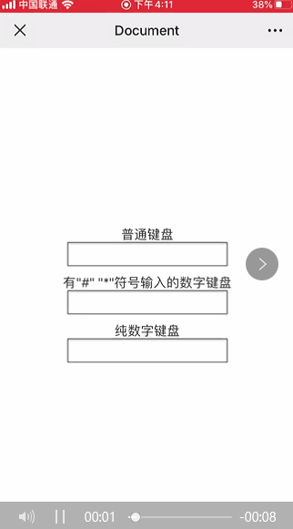
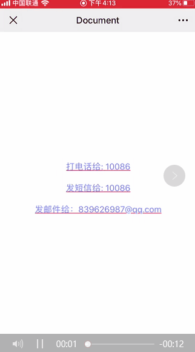
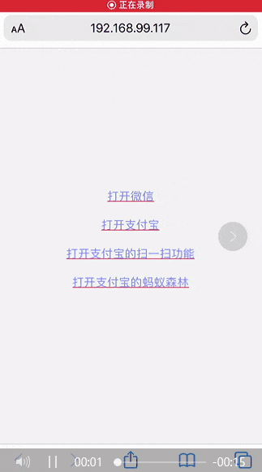
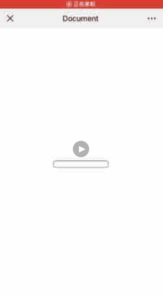
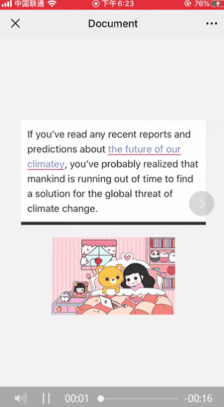
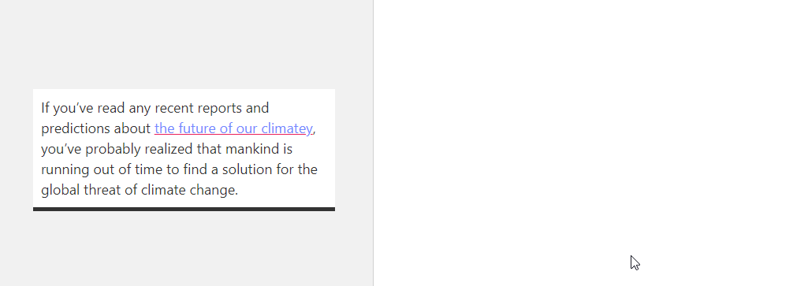
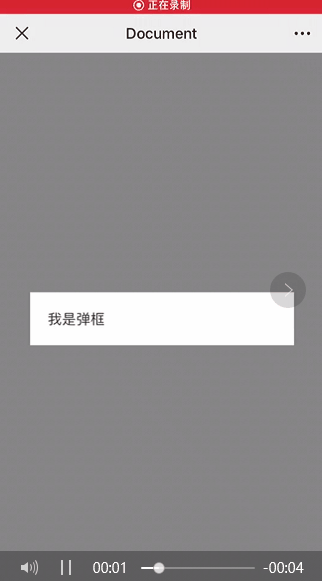

<html><head><meta charset='utf-8'><meta name='viewport' content='width=device-width, initial-scale=1'>
<meta name='applicable-device' content='pc'><meta name='keywords' content='电脑,电脑讲解,电脑技术,编程,电脑故障维修H5移动端开发遇见的东西' />
<script src='../../highlight/highlight.pack.js'></script>
<link rel='stylesheet' type='text/css' href='../../highlight/styles/monokai.css'/>

<link rel='stylesheet' href='../../fenxiang/dist/css/share.min.css'>
<script src='../../fenxiang/src/js/social-share.js'></script>
<script src='../../fenxiang/src/js/qrcode.js'></script>

</head><body><script>hljs.initHighlightingOnLoad();</script><script>
var system ={};  
var p = navigator.platform;       
system.win = p.indexOf('Win') == 0;  
system.mac = p.indexOf('Mac') == 0;  
system.x11 = (p == 'X11') || (p.indexOf('Linux') == 0);     
if(system.win||system.mac||system.xll){
document.write("<link href='../css/3.css' rel='stylesheet' type='text/css'>");}else{ document.write("<link href='../css/3wap.css' rel='stylesheet' type='text/css'>");}</script><script src='../../js/3.js'></script><div class='div2'><div class='heading_nav'><ul><div><li><a href='../../index.html'>首页</a></li>
</div><div onclick='hidden1()' >分享</div>
</ul></div></div>
<div id='heading_nav2'> 
<li class='row' >
<div class='social-share' data-mode='prepend'><a href='javascript:' class='social-share-icon icon-heart'></a></div></li></div><script charset='utf-8' src='../../3/js/hengfu.js'></script><script charset='utf-8' src='../../3/js/hengfu2.js'></script><hr><div class='div1'><div class='biaoti'><center>H5移动端开发遇见的东西</center></div><div class='banquan'>原文出处:本文由博客园博主RopeHuo提供。<br/>
原文连接:https://www.cnblogs.com/rope/p/11654070.html</div><br>
    <p>常见的有<code>viewport</code>、<code>强制浏览器全屏</code>、<code>IOS的Web APP模式</code>、<code>可点击元素出现阴影</code></p>
<p>本文主要讲一些其他的或者实用的优化手段。</p>
<h2 id="弹出数字键盘">1. 弹出数字键盘</h2>
<pre><code><code>&lt;!-- 有&quot;#&quot; &quot;*&quot;符号输入 --&gt;
&lt;input type=&quot;tel&quot;&gt;

&lt;!-- 纯数字 --&gt;
&lt;input pattern=&quot;\d*&quot;&gt;</code></pre>
<p><code>安卓</code>跟<code>IOS</code>的表现形式应该不一样，大家可以自己试试。当运用了正则<code>pattern</code>后，就不用关注<code>input</code>的类型了。</p>
<p></p>
<h2 id="调用系统的某些功能">2. 调用系统的某些功能</h2>
<pre><code><code>&lt;!-- 拨号 --&gt;
&lt;a href=&quot;tel:10086&quot;&gt;打电话给: 10086&lt;/a&gt;

&lt;!-- 发送短信 --&gt;
&lt;a href=&quot;sms:10086&quot;&gt;发短信给: 10086&lt;/a&gt;

&lt;!-- 发送邮件 --&gt;
&lt;a href=&quot;mailto:839626987@qq.com&quot;&gt;发邮件给：839626987@qq.com&lt;/a&gt;

&lt;!-- 选择照片或者拍摄照片 --&gt;
&lt;input type=&quot;file&quot; accept=&quot;image/*&quot;&gt;

&lt;!-- 选择视频或者拍摄视频 --&gt;
&lt;input type=&quot;file&quot; accept=&quot;video/*&quot;&gt;

&lt;!-- 多选 --&gt;
&lt;input type=&quot;file&quot; multiple&gt;</code></pre>
<p></p>
<h2 id="打开原生应用">3. 打开原生应用</h2>
<pre><code><code>&lt;a href=&quot;weixin://&quot;&gt;打开微信&lt;/a&gt;
&lt;a href=&quot;alipays://&quot;&gt;打开支付宝&lt;/a&gt;
&lt;a href=&quot;alipays://platformapi/startapp?saId=10000007&quot;&gt;打开支付宝的扫一扫功能&lt;/a&gt;
&lt;a href=&quot;alipays://platformapi/startapp?appId=60000002&quot;&gt;打开支付宝的蚂蚁森林&lt;/a&gt;</code></pre>
<p>这种方式叫做<code>URL Scheme</code>，是一种协议，一般用来访问<code>APP</code>或者<code>APP</code>中的某个功能/页面（如唤醒<code>APP</code>后打开指定页面或者使用某些功能）</p>
<p><code>URL Scheme</code>的基本格式如下：</p>
<pre><code><code>行为(应用的某个功能/页面)    
            |
scheme://[path][?query]
   |               |
应用标识       功能需要的参数</code></pre>
<p>一般是由<code>APP</code>开发者自己定义，比如规定一些<code>参数</code>或者<code>路径</code>让其他开发者来访问，就像上面的例子</p>
<p>注意事项：</p>
<ul>
<li>唤醒<code>APP</code>的条件是你的手机已经安装了该<code>APP</code></li>
<li>某些浏览器会禁用此协议，比如微信内部浏览器（除非开了白名单）</li>
</ul>
<p></p>
<h2 id="解决active伪类失效">4. 解决active伪类失效</h2>
<pre><code><code>&lt;body ontouchstart&gt;&lt;/body&gt;</code></pre>
<p>给<code>body</code>注册一个空事件即可</p>
<h2 id="忽略自动识别">5. 忽略自动识别</h2>
<pre><code><code>&lt;!-- 忽略浏览器自动识别数字为电话号码 --&gt;
&lt;meta name=&quot;format-detection&quot; content=&quot;telephone=no&quot;&gt;

&lt;!-- 忽略浏览器自动识别邮箱账号 --&gt;
&lt;meta name=&quot;format-detection&quot; content=&quot;email=no&quot;&gt;</code></pre>
<p>当页面上的内容包含了<code>手机号/邮箱</code>等，会自动转换成可点击的链接</p>
<p>比如你有如下代码：</p>
<pre><code><code>&lt;p&gt;13192733603&lt;/P&gt;</code></pre>
<p>但是有些浏览器会识别为手机，并且可以点击拨号</p>
<h2 id="解决input失焦后页面没有回弹">6. 解决input失焦后页面没有回弹</h2>
<p></p>
<p>一般出现在<code>IOS设备中的微信内部浏览器</code>，出现的条件为：</p>
<ul>
<li>页面高度过小</li>
<li>聚焦时，页面需要往上移动的时候</li>
</ul>
<p>所以一般<code>input</code>在页面上方或者顶部都不会出现无法回弹</p>
<p>解决办法为，在聚焦时，获取当前滚动条高度，然后失焦时，赋值之前获取的高度：</p>
<pre class="vue"><code>&lt;template&gt;
  &lt;input type=&quot;text&quot; @focus=&quot;focus&quot; @blur=&quot;blur&quot;&gt;
&lt;/template&gt;

&lt;script&gt;
  export default {
    data() {
      return {
        scrollTop: 0
      }
    },
    
    methods: {
      focus() {
        this.scrollTop = document.scrollingElement.scrollTop;
      },
      
      blur() {
        document.scrollingElement.scrollTo(0, this.scrollTop);
      }
    }
  }
&lt;/script&gt;</code></pre>
<h2 id="禁止长按">7. 禁止长按</h2>
<p></p>
<p>以上行为可以总结成这几个（每个手机以及浏览器的表现形式不一样）：<code>长按图片保存</code>、<code>长按选择文字</code>、<code>长按链接/手机号/邮箱时呼出菜单</code>。</p>
<p>想要禁止这些浏览器的默认行为，可以使用以下<code>CSS</code>：</p>
<pre class="css"><code>// 禁止长按图片保存
img {
  -webkit-touch-callout: none;
  pointer-events: none; // 像微信浏览器还是无法禁止，加上这行样式即可
}

// 禁止长按选择文字
div {
  -webkit-user-select: none;
}

// 禁止长按呼出菜单
div {
  -webkit-touch-callout: none;
}</code></pre>
<h2 id="滑动不顺畅粘手">8. 滑动不顺畅，粘手</h2>
<p>一般出现在<code>IOS</code>设备中，自定义盒子使用了<code>overflow: auto || scroll</code>后出现的情况。</p>
<p>优化代码：</p>
<pre class="css"><code>div {
  -webkit-overflow-scrolling: touch;
}</code></pre>
<h2 id="屏幕旋转为横屏时字体大小会变">9. 屏幕旋转为横屏时，字体大小会变</h2>
<p>具体出现的情况不明，有时候有有时候没有，欢迎指出。</p>
<p>优化代码：</p>
<pre class="css"><code>* {
  -webkit-text-size-adjust: 100%;
}</code></pre>
<h2 id="最简单的rem自适应">10. 最简单的rem自适应</h2>
<p>大家都知道，<code>rem</code>的值是根据<code>根元素的字体大小</code>相对计算的，但是我们每个设备的大小不一样，所以<code>根元素的字体大小</code>要动态设置</p>
<pre class="css"><code>html {
 font-size: calc(100vw / 3.75);
}

body {
  font-size: .14rem;
}</code></pre>
<p>效果如下：</p>
<p></p>
<h2 id="滑动穿透">11. 滑动穿透</h2>
<p>当你想在出现<code>遮罩</code>的时候，锁住用户的滚动行为，你可以这么做。</p>
<p>假设<code>HTML</code>结构如下：</p>
<pre><code><code>&lt;div class=&quot;mask&quot;&gt;
  &lt;div class=&quot;content&quot;&gt;我是弹框&lt;/div&gt;
&lt;/div&gt;</code></pre>
<p><code>CSS</code>样式如下：</p>
<pre class="css"><code>.mask {
  position: fixed;
  top: 0;
  left: 0;
  display: flex;
  justify-content: center;
  align-items: center;
  width: 100%;
  height: 100%;
  background-color: rgba($color: #333, $alpha: .6);

  .content {
    padding: 20px;
    background-color: #fff;
    width: 300px;
  }
}</code></pre>
<p>效果如下：</p>
<p></p>
<p>可以看到，当在<code>遮罩</code>上滑动的时候，是会穿透到父节点的，最简单的办法就是阻住默认行为：</p>
<pre class="javascript"><code>document.querySelector(&quot;.mask&quot;).addEventListener(&quot;touchmove&quot;, event =&gt; {
  event.preventDefault();
});</code></pre>
<p>如果在<code>vue</code>中，你可以这么写：</p>
<pre><code><code>&lt;div class=&quot;mask&quot; @touchumove.prevent&gt;&lt;/div&gt;</code></pre>
<p>如果<code>.content</code>也有滚动条，那么只要阻止<code>遮罩</code>本身就行：</p>
<pre class="javascript"><code>document.querySelector(&quot;.mask&quot;).addEventListener(&quot;touchmove&quot;, event =&gt; {
  if (event.target.classList.contains(&quot;mask&quot;)) event.preventDefault();
});</code></pre>
<p>或者：</p>
<pre><code><code>&lt;div class=&quot;mask&quot; @touchumove.self.prevent&gt;&lt;/div&gt;</code></pre>
<p>这样，当出现<code>遮罩</code>的时候用户的滑动就会被锁住啦</p>
<h2 id="最后">最后</h2>
<p>参考文章：https://juejin.im/post/5d6e1899e51d453b1e478b29</p>
<p></p>

</div>
</div><hr><script charset='utf-8' src='../../js/sming.js'></script></body></html>